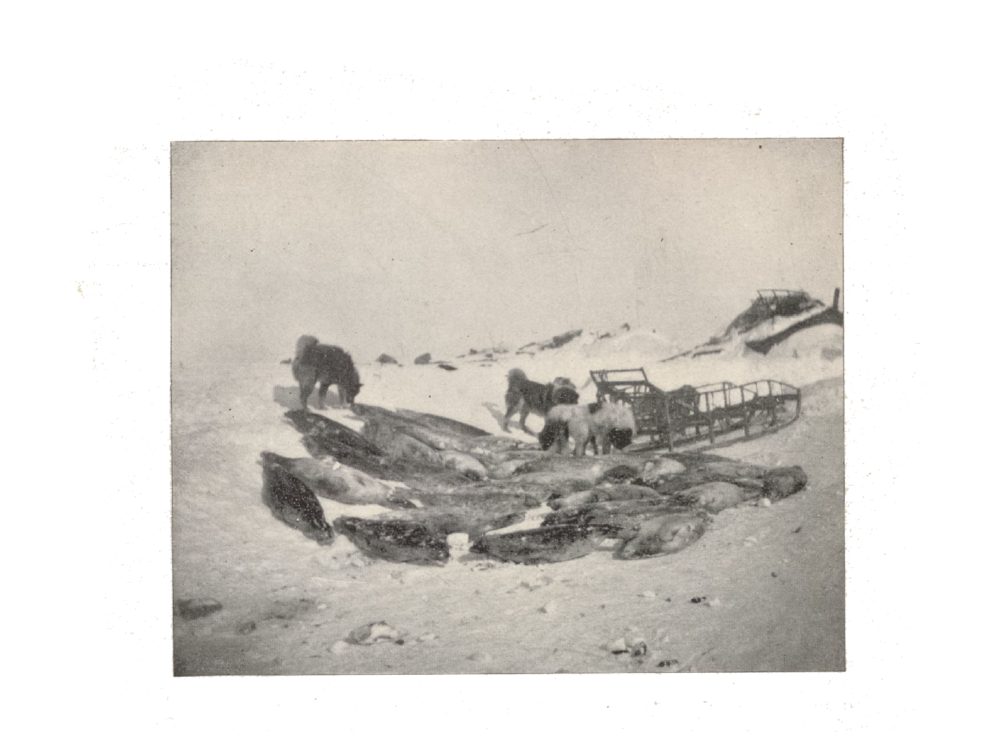
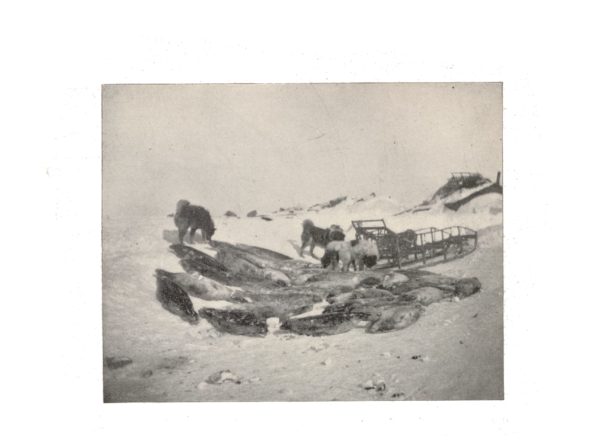

Hello!
Scroll to navigate through different
moments of an expedition that is based
on real events.
Every scene has its
own specific song so make sure your sound
is on and the volume is turned up —
but not too high.
Please do not resize the window.

The Overland
Relief Expedition
Alaska, early in November, 1897:
In dire distress and in great danger of starvation.
The danger was so imminent and serious.
These conditions call for prompt and energetic action —
looking to the relief in this cold landscape.

Duty
“landed safely on the beach,
our good-byes to our shipmates had been said,
and we stood on the shore watching the boat as it went back to the Bear,
wondering whether we should ever see our friends again.”
letter of instructions
“Believing that your long experience in arctic work and the known ability and reputation as an able and competent officer, all especially fit you for the trust, you have been selected to command the relief expedition.
[...]
Mindful of the arduous and perilous expedition upon which you are about to enter, I bid you, your officers and men, Godspeed upon уоuг errand of mercy, and wish you a successful voyage and safe return.”
good-bye


Sled
Ride


“The sled is an open framework of hickory or oak,
no more wood being used than is absolutely necessary”
With dogs:
“A team generally consists of an odd number of dogs, the odd one being harnessed to the central line ahead of the others and acts as a leader.
In traveling over a comparatively level county, with a good road and light loads on the sleds, the dogs will maintain a trot, which is faster than a man can walk, but not as fast as he can run, so the trail maker runs ahead for soine distance and then slows down to a walk until the head team comes up with him, when he repeats the operation.
But this was not to be accomplished as usually pictured, sitting back on the sled and cracking a whip. In Alaska, at least, it is not that way, and unless the road is very smooth and the load light, the men of an outfit must not only walk, but push, and haul, and sometimes harness themselves up to the sleds to get along. At first such work seems killing, but you get used to it like anything else and take it as a matter of course.”
With deer:
“All our travel heretofore had been by dog teams, and, as we were to have much deer traveling farther on, I was very anxious to try the change and note the difference, wishing for anything that would hurry us along.
All hands must be ready at the same time when starting a deer train, for, just as soon as the animals see the head team start, they are all off with a jump, and for a short time keep up a very high rate of speed. If one is not quick in jumping and holding on to his sled, he is likely either to lose his team or be dragged along in the snow. They soon come down to a moderate gait, however, and finally drop into a walk when tired.
No whip is used, and none should be, for the deer are very timid and easily frightened, and once gotten in that state they are hard to quiet and control.
It was very cold sitting idly on a deer sled, and it was all we could do to keep some part of the body from freezing; many times a sharp twinge or prick would make one’s head turn from the wind and his hand go up, to work vigorously to rouse the feeble circulation in the end of his nose.
My deer, which, as I afterwards learned, once had a leg broken by the sled running ahead on him, became frightened and bolted down the hill, throwing me off the sled. I held on to the line and was dragged through the snow against an old fish rack at the bottom of the hill. When I saw that fish rack loom up, I thought my time had come, but my bones seemed stronger than the rack, for throwing my head aside, my shoulder caught the upright and broke it short off. When I finally stopped the deer and pulled myself together, I was grateful to find I had no bones broken, for such a thing was too serious a matter even for contemplation.
It seemed to be my day for accidents, for soon after dark my deer wandered from the trail, became entangled in a lot of driftwood on the beach, half covered with snow, and finally wound up by running the sled full speed against a stump, breaking the harness, dragging the line out of my hand, and disappearing in the darkness and flying snow.”
Open—
Hearted


“He saw what our needs were, and, so far as he was able,
or as much as he had, he would help us gladly.
It is refreshing to meet such simple, true-hearted people
in time of need,
with that open-hearted hospitality which is universal among the natives of Alaska.”
more
“The hospitality of these people I have never seen equaled elsewhere. It is never grudging; it is thrust upon you. The best they have, and the best place in the house are at your disposal.
Never in all our journey did we pass a house where the people did not extend a cordial welcome and urge us to go in; and hardly a hut that we did go into, but the best place was cleared out for us and our belongings. What this means to a tired, cold, and hungry traveler can not be fully appreciated save by those who have experienced it.
and my former good impressions of the Alaskan natives were but intensified by this winter’s journey. All that we ever gave in return for such hospitality, and all that was expected was a cup of tea and a cracker to the inmates of the house after we had finished our meal.”
Temporary
Homes
“Though it turned out to be a horrible place, no palace could
have been more welcome. It was a small hut, about 10 by 12, and 5
feet high, and 15 people were already sleeping there. It was most
filthy and the worst house I have seen in all my Alaskan experience;
but I was too tired then to care for that, too tired even to eat; and
though I had had nothing but a couple of crackers since morning, I
was quite satisfied to take off my wet clothing, crawl into my bag,
and sleep.”
“The small huts, called “igloos,”
are occupied by one or more families, often
being very crowded. The large hut was the “kazheem,” used for
the dance house, council house, general workhouse, and place of
lodging for travelers; and is occupied by all the male inhabitants of
the village who have no families.”
“When we awoke in the morning
The air was horrible,
and it was refreshing to get outside
and to be going again through the storm
and over the rough ice.”


En
Route


“we soon came to the leal ascent of the mountain, and then our progress was very slow, many places were so steep that it required three or four of us to help each sled up.”
difficulties
thirst
midday halt
“I thought the ice we recently passed over had made a rough road, but this was even worse, for here were all the crushings of the straits shoved up against the mountains that ran down abruptly into the sea, and over this kind of ice we had to make our way. Darkness set in long before we had come to the worst of it, and a faint moon gave too little light for such a road. It was a continuous jumble of dogs, sleds, men, and ice—particularly ice—and it would be hard to tell which suffered most, men or dogs. Once, in helping the sled over a particularly bad place, I was thrown 8 or 9 feet down a slide, landing on the back of my head with the sled on top of me.
By this time some of our dogs were in rather bad shape. The thin crust on the snow coming across the delta country and the hard ice on the river had lacerated the cushions of their feet, and many of them left a trail of blood behind them with every step.”
“It is always well before starting in the morning to take as much tea and water as one can hold, to avoid as much as possible a thirst during the day. It is impossible to get water during the day without stopping to build a fire and melt snow, unless one carries a flask inside the clothing, and this stopping uses up time. Snow is bad for the mouth and soon makes it sore, besides not being sufficient to quench the thirst except for the minute. The worst feature of eating snow is that if one gives way to the temptation there is no stopping for the rest of the day, for, while it serves to quench the thirst for the time being, it seems to really increase it in the long run, and shortly after taking some snow one is more thirsty than ever. I found that by drinking a quart of tea in the morning I seldom was thirsty until night, and had no great desire to drink unless a halt was made in the middle of the day to rest and make a fire for tea.”
“If in the middle ot the day wood could be had, and other circumstances would permit, a stop was made to make a fire, melt snow, and have a lunch of tea and crackers. Sometimes, however, circumstances would not permit us to stop, and we kept on the entire day without a break. At first I was more loath to stop than later, but after more experience I found that the hour spent in getting our fire and a bite to eat was well spent, for not only were we refreshed and better able to continue in the afternoon, but the dogs also seemed to be benefited by the short rest and traveled all the better for it.
Refreshed by our rest and lunch, we started for the second ascent in good spirits.”
Infinite
Cold

0° -5° -10° -15° -20° -25° -30 -35° -40°
c ii ie e c ie c ice ce i ice ic e ice i ce ic e icc ce ice ice ice ice ice ice
ice ice ice freezing
“In the darkness I stepped through a crack in the ice, and my leg to the knee was immediately one mass of ice. I was now com pelled to go on to some place where my foot gear could be dried, and, though almost ready to drop where I was, I had to keep on, for to stop, meant to freeze.”
“we found the ice of sufficient thickness to cross with the sleds.”
“as the ice was hard and level, made excellent progress.”
“The difference between care and carelessness is slight, in arctic travel, and the first let-up is sure to bring its reminder in the shape of a frosted toe or finger or a frozen nose. One must be on guard, and the slightest tinge in the nose or cheek must be heeded, and circulation started again by vigorous rubbing. Though somewhat disagreeable and painful, freezing these parts is not necessarily harmful unless too long neglected.
I saw a case where the end of a man’s nose had dropped off from frostbite, but such things are rare. Usually the skin is discolored, becomes dead and peels off, leaving the member quite sensitive for a time.
But with the hands, and especially the feet, it is different. No part of the body requires more attention than these ; socks and boots must be well made and kept thoroughly dry; even the slightest perspiration will, if one stops too long, work disastrously. Both boots and socks should be changed immediately upon going into camp, and dry ones must be put on in the morning before starting. The natives know the importance of this only too well, and if they see one inclined to neglect these precautions, they will insist on his taking care of his foot gear.
It is the easiest thing in the world for a man to suffer severely in such a climate, but it is possible, by good care and attention, to avoid what one might call extreme suffering, and live there with only the unavoidable discomforts of the country, to which a man in good health sooner or later grows accustomed.”
Camping


Camps
building snow houses
camping system
“The favorite way among the natives of camping in this part of the country is to build snow houses at night. The wind packs the snow so hard that with a long knife it can be cut into blocks like building stone, and in a short time a small strong house can be constructed with these, the chinks being stopped up with loose snow, and a large block used as a door to close theopening, making the place nearly airtight. Soon the warmth of the bodies of three or four people, together with the heat from a native seal-oil lamp or kerosene-oil stove, will raise the temperature of the place so that it is fairly comfortable, and one can even remove some of his clothing. On account of the difficulties of construction, a snow house can not be so large as a tent, and the oil for the stove adds greatly to the weight to be carried; but, when traveling back from the coast, where there is no wood, snow houses are the necessity of circumstances. As such they are made the best of, and whatever discomforts they entail are passed off as unavoidable and not thought of. A philosophical common sense is a great help in living in the arctic regions, as elsewhere. If you are subjected to miserable discomforts, or even if you suffer, it must be regarded as all right and simply a part of the life, and like sailors, you must never dwell too much on the dangers or suffering, lest others question your courage.”
“We had now been traveling so long that our camping and packing the sleds had been reduced to a system. There were four of us and each had his own part of the work to do. The doctor was the cook and looked out for the stove and the food. I attended to the sleds and the tent, fhe native woman was the doctor’s assistant and besides looked after our clothes, while her husband Nekowrah helped me and did the heavy work. On coming to our camping place, Nekowrah and I would get out the tent and pitch it. This done, the doctor would set up his stove, while Nekowrah went on a hunt for wood, and I would bank up the snow around the sides to keep the wind out and secure the hut generally. Then the sleds were unpacked and all our sleeping gear, food, and cooking utensils were passed in to Shucungunga, who arranged them inside. By the time the fire was started in the stove, the dogs were unharnessed, and the sleds put beyond their reach. This would all take from one-half to threequarters of an hour, and in that time the tent would be good and warm and we could go inside and change our clothes. The wet ones were passed over to Shucungunga for drying, who stretched a line along the ridgepole and hung up the clothes to catch all the warm air possible. It was not long before supper was ready, and it generally mattered little what it was, so long as there was enough, for by this time we were about like the dogs, hungry enough to eat anything that could be chewed. Usually the supper consisted of bacon and beans, followed by “slapjacks” (cakes made of flour and water and fried), and all the tea we could drink, generally not less than a quart.
In camping one must be careful of the few belongings and camp tools, for anything left outside at night is sure to be covered over in the morning if it is blowing, and anything that has to be left out must be stuck up in the snow or packed in the sleds if you want to see it again. In the morning Nekowrah or the doctor would be up by 5 o’clock and have the fire started and the breakfast under way, which was not different from the supper—simply something to eat.
Breakfast being over, the sleds were gotten out and packed, reserv ing the tent to the last, so as to be handy at night. The grub box, with a little food inside, and a camp kettle and axe were placed on the sled where they could easily be gotten at in case a stop was made during the day. The sleds were then lashed, the dogs caught and har nessed, and we were ready to start.”

Glowing
Darkness


“From Cape Prince of Wales on we had been treated to bright auroral displays almost every night. They generally came out of a dark bank that would form in the northern horizon just after dark, and stretch in long shooting streamers that gradually worked over the heavens to the opposite horizon, waving back and forth, so close to the earth as to be seemingly within reach, and then as gradually receded and subsided. Usually they came in extremely cold weather and seemed to presage cold weather for the following day. During the coldest days there were numerous sun-dogs, and, sailorlike, when two and often three of these showed in the sky, I anticipated bad and stormy weather, but it never came, and it seemed that good weather instead of bad followed in these regions.”
“It was impossible to see 10 yards ahead, and I knew it would be reckless to start off alone, for the others were far in advance by this time, and I might wander about all night, become exhausted, and perhaps freeze.”
448


“The first and great need of the whalemen will probably be food. It is believed that the only practicable method of getting it to them is to drive it on the hoof. The purpose is to collect the entire available herds of reindeer, all to be driven to Point Barrow.”

Canidae

dogs
and
wolves
“Wolves had been following them for the last few days and a strict watch had to be kept both day and night.
Last night three wolves got into the herd and killed one deer before they were discovered and driven off.”
“And after supper and a smoke it was time to feed the dogs. The frozen seal meat was first chopped into small pieces, and Nekowrah and myself, armed with clubs, would undertake to see that all the dogs fared alike. It was a task, for I know of nothing so ravenous as a hard-worked native dog, and with a pack of fifteen or twenty animals it took all of our time and attention to see that the larger dogs did not monopolize all the food. If a piece of meat was too large for a dog to swallow immediately, another dog would have it out of his mouth and a general fight ensue, and then a liberal use of the clubs would be necessary to produce harmony in the pack. Dogs should be fed once a day, and best at night, after they have rested a while from their work. It is bad to feed them much in the morning or to feed them during the day, as they become heavy and loggy, and do not work so well as on an empty stomach.
Feeding the dogs was always a trying and interesting task. They are always hungry, and upon appearing among them with an armful of dried fish, in their eagerness to get a stray mouthful, they crowd around in one fighting, jumping mass, and make it difficult for one to even keep his balance. After throwing out a fish to each dog, it takes all hands with clubs to keep off the larger fellows and see that the smaller and weaker ones are allowed to keep and eat their share. Usually they are peaceful enough, but when being fed they are like wild animals, and snarl and bite each other, and keep up a continual fight until everything is eaten. When the meal is finished and there is nothing more to eat in sight, they will lie down quietly in the snow and go to sleep. They are tough and need no protection. During the coldest weather and the most violent blizzards, they will curl up on the snow anywhere and sleep, and when the snow has drifted over them, get up, shake themselves, and lie down again in the same place for another sleep.
On the morning of March 17 we found the dogs buried in the drift, with only their noses sticking out. They were all right, however, and anxious to be going.”
Blizzards
“Our usual blizzard came up”
“We had our usual snowstorm at night and it lasted until the middle of the following day”
“The snow began to fly, blinding us so there was no use trying to face it, and we had to camp where we were. We had to dig a hole in the snow and build a barricade around it before we could pitch our tent in safety.”
“We thought our blizzards were about done with, but soon found that they were almost of daily occurrence and we must make the best of them, and the most of what time we could travel in between.”
“I afterwards learned that during this blizzard Lopp was compelled to move his camp. How such things are done at such times none can tell but those who do them, and too often the experiences are so terrible that the desire is to forget about them when they have passed. When we caught up with the deer herd later, all the party showed the effects of their work this day, in the masses of black skin on their faces and noses where they had been frozen while shifting their camp. During this day the thermometer registered—40° to —45°, which is unusually low with so much wind.”
“Though the temperature moderated somewhat to-day, the wind blew as hard as ever, and we could only remain where we were until the blizzard had spent its force. We had been warned concerning the blizzards on this coast, and I had heard many stories of the terrible times of parties who had been caught in these storms. One party I knew of had been storm-bound for forty-two days at a place but a few miles from where we now were, and were compelled to eat their dogs before the storm passed over.”
Companions


“Our plans were moving on to success, and I can not speak too highly of Lopp and his boys for the courage, fortitude, and skill they showed in making that awful trip successfully.”
“We were all grateful to Mr. Lopp and the “boys” for what they had done, and I can not speak too highly of the skill, courage, and persistent, untiring work they showed from the beginning to the end of that long journey.”
“There came with Dr. Kettleson, to manage our train, Mikkel, a Laplander, who was counted a thoroughly experienced and capable man, and I found him all that. A stolid, determined character, and possessed of a wonderful patience.”
Taking
Lives

 



“If the situation is found, as now anticipated, to be desperate, the officers must take charge in the name of the Government and organize the community for mutual support and good order, appor tioning the provisions on hand, and slaughter as many reindeer as necessary (which it is hoped will have arrived) for food, to make all hold out until August, 1898, when you will arrive in the Bear.”
Relief


“Ten months later she returned again to Seattle, bringing four crews of wrecked whalers, and having fully carried out all the orders and accomplished all the purposes of the expedition without loss or accident of any kind.”
without loss
Fin
success
“We started with 448 in all, including the 7 Lieutenant Bertholf brought to Kotzebue Sound, and we arrived at Point Barrow with 382. The difference represents what we had to kill for food for ourselves, and what were killed by overwork and by dogs and wolves, 32 in all; and the 34 which strayed off in a blizzard near Cape Kruzenstern, but were afterwards recovered and driven to Lieutenant Bertholf at Point Hope. Considering the hurried time, the unknown and untried regions, and all the dangers incident to such travel and work, I consider the drive in everyway a marked success.
In detailing the work of the expedition, I have not dwelt upon the personal part of the travel with any intention to magnify the dangers or trials, but simply to show some of the difficulties we encountered, and which all people traveling in that country have to contend against. That we overcame them was due to the enthusiastic labor of all in the effort to carry out your orders; and to the help we received from those living in the country and from the natives. The help of the natives to us and to the people at Point Barrow is deserving of some substantial reward.”
Very respectfully,
D. H. Jarvis,
First Lieutenant, R. C. S.,
Commanding
Overland Relief Expedition.
Thank you
Every journey comes to an end. Theirs was over 120 years ago. Mine is now.
I would like to thank a few people for being an essential part in this project:
Kurt Lüttgen for writing this random book I pulled out of the public bookcase.
Prof. Zitzmann, Prof. Krüll, Prof. Dr. Schaden, Prof. Vetter, Steve Wühr and Max Deistler for pushing me in nice directions.
Max Hässlein for helping with the code.
yann 92 for the sample in “Duty” and “Relief”.
Reed Maidenberg for the samples in “En Route”.
Daniel Shiffman for his entertaining p5.js tutorials.
The Library of Congress for the report.
The Internet Archive for the endless amount of research material.
Ableton for bringing my ideas to the speakers.
GitHub for hosting this site.
NTS Radio and especially The Early Bird Show for these early mornings of work.
Very respectfully, Henrik Stelter.